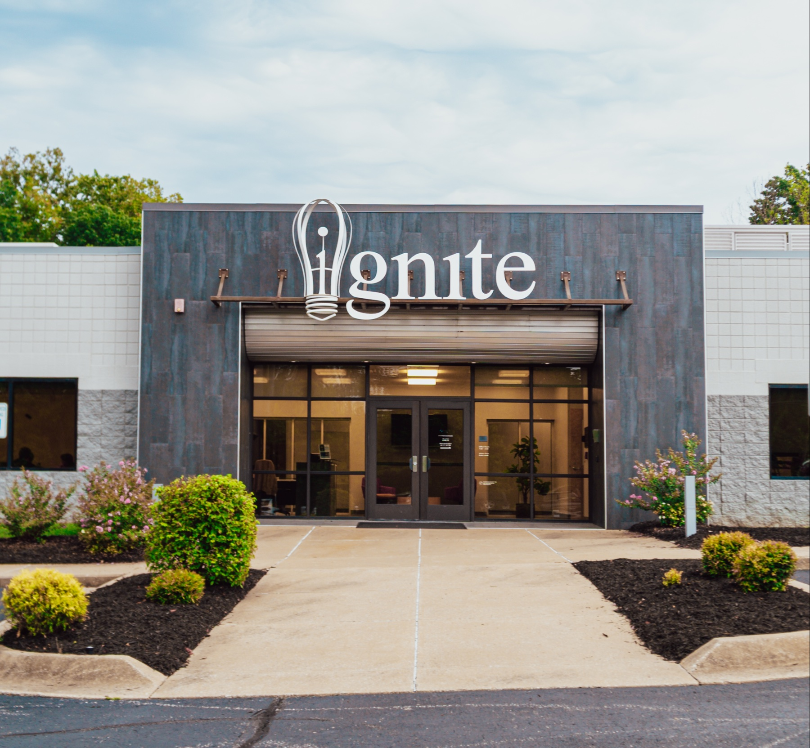

We learned by building.
Hands-on work taught us to turn a complex problem into something useful: a clear website, an organized workflow, a tool people can actually use.
Northwest Arkansas · Community technology
We help Northwest Arkansas nonprofits design, build, and improve the technical systems behind their work—so more energy can stay focused on the mission.
Websites, data, workflows, and everyday tools shape how an organization reaches people and runs its programs. When those systems work well, teams have more room to do what only they can do: serve their community.
A classroom idea with a community purpose
Learning to build with technology showed us what the right systems can make possible. It also made us look beyond our own projects—and toward the organizations already doing essential work across Northwest Arkansas.

Hands-on work taught us to turn a complex problem into something useful: a clear website, an organized workflow, a tool people can actually use.
Community organizations often have the ideas and expertise, but not always the time, budget, or technical staff to create the systems behind them.
We created TechPosure to put technical skills to work for nonprofits—helping the people strengthening our region spend more time on their missions.
Nonprofit teams are experts in the people and causes they serve. We can add focused technical capacity when a needed project sits outside the team’s time or expertise.
The friction we can help untangle
They already know how to serve the community. We help build the systems behind that work.
Every organization has different needs. We start by understanding the problem, then determine where our skills can be most useful.
Accessible, responsive websites for nonprofits and community initiatives.
Custom browser-based tools when off-the-shelf software doesn’t fit the work.
Lightweight applications and digital experiences for organizational needs.
Clear ways to track programs, volunteers, resources, outreach, and participation.
Better-organized digital workflows for repetitive or fragmented processes.
Thoughtful structures for information, records, forms, and spreadsheets.
Digital models, prototypes, and visualization support where design needs dimension.
Skill-based help configuring devices, software, tools, and infrastructure.
Connections between tools that reduce repetitive administrative work.
Have a challenge that doesn’t fit a category? Start with the problem—we’ll explore what’s possible.
Bring us the challengeWe learn about the organization, its mission, and the technical problem.
We shape the simplest system that addresses the organization’s actual needs.
Our team develops, configures, or implements the agreed solution.
We help the organization understand and use what was created.
Built here. Built for here.
We want nonprofit organizations and community initiatives across our region to be able to reach technical talent when they need it. As we grow, our goal is to take on more projects, expand what we can build, and strengthen the digital infrastructure supporting local work.
If your nonprofit or community initiative needs a website, application, tracking system, workflow, technology setup, or another technical project, we’d like to hear about it.